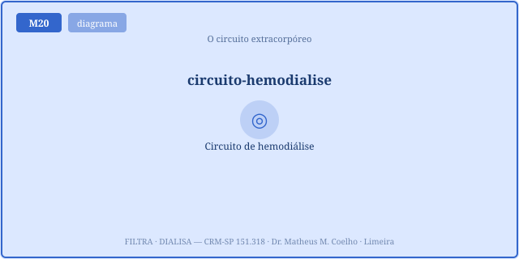
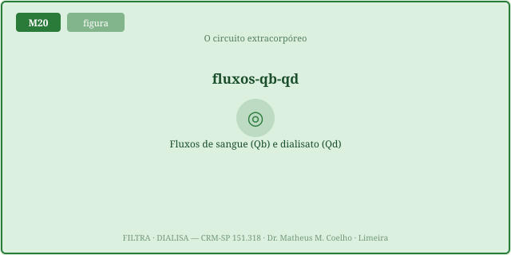
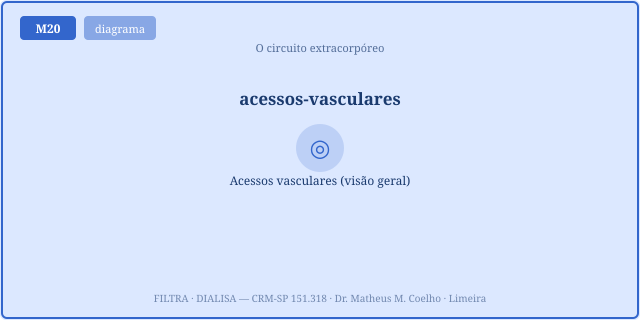
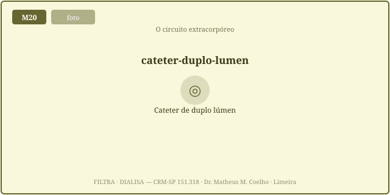
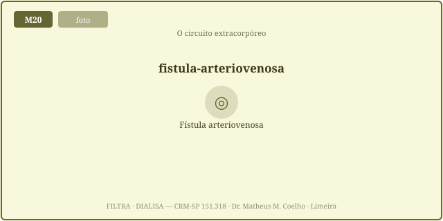
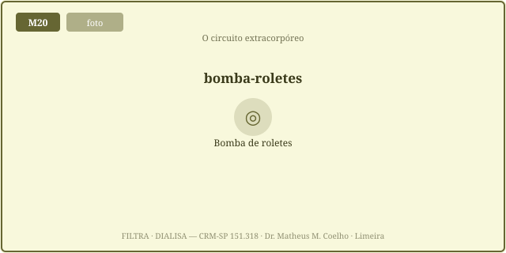
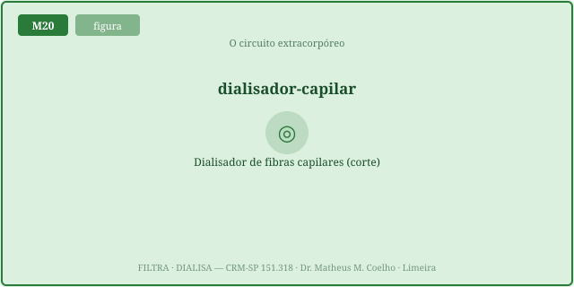

A máquina não substitui o rim — substitui, por física, algumas
funções. Difusão e convecção tiram soluto; a ultrafiltração tira volume. As Fig. 1–8 voltam no Caso, na
Trilha e na Avaliação (algumas reaparecem nos exercícios). Atribuição em CREDITS.md (em
curadoria).
O sangue sai do paciente pelo ramo arterial (pré-bomba, pressão negativa), a bomba o empurra com fluxo Qb, ele cruza o dialisador contra o dialisato (Qd, em contracorrente) e volta pelo ramo venoso (pressão positiva). Cada manômetro relata um segmento.


O acesso decide quanto sangue a bomba consegue puxar. Fístula AV (madura) entrega fluxo alto; prótese AV, intermediário; cateter (temporário/permanente) costuma limitar. Se a bomba pede mais do que o acesso dá, a P_art mergulha (sucção) — e o Qb_efetivo não sobe.



A bomba de roletes ocluí o tubo e empurra um volume fixo por rotação (Qb 200–450 mL/min). No dialisador, milhares de capilares oferecem área de troca; a KoA é a "potência" da membrana. O clearance é blood-flow-limited: K ≈ função crescente e saturante de Qb (equação de Michaels) — limitada pelo fluxo de sangue.


A P_art (pré-bomba, negativa) mede a capacidade do acesso de entregar; a P_ven (positiva) mede a resistência ao retorno (agulha, dobra, coágulo). A TMP (transmembrana = lado sangue − lado dialisato) impulsiona a ultrafiltração do volume: Q_uf = Kuf · TMP — para tirar mais água na mesma membrana, é preciso mais pressão (há teto).
A recirculação (agulhas muito próximas, num acesso) devolve sangue já dialisado à entrada arterial → o dialisador trabalha sobre sangue limpo e o clearance efetivo no corpo despenca, mesmo com Qb/Qd ótimos no display. Afastar as agulhas restaura a dose. O circuito também coagula e precisa de anticoagulação (citrato/heparina — detalhe do M29).
Tudo isto é homeostasia por máquina: a diálise substitui, por física (difusão/convecção/ultrafiltração), a regulação que o rim fazia do meio interno — volume, eletrólitos, ácido-base, escórias. Ler as pressões e os fluxos é ler essa homeostasia sendo mantida por fora do corpo.
Paciente em hemodiálise; a máquina alarma repetidamente. A equipe quer "trocar o cateter". Será que o problema é o acesso?
Um circuito de pressões: acesso → bomba (Qb) → dialisador (contra Qd) → retorno. Cada pressão relata a física de um segmento (Fig. 1).
Para manter o gradiente de concentração máximo ao longo de toda a membrana — o sangue "sujo" encontra dialisato "limpo" em cada ponto (Fig. 2).
O acesso: fístula madura entrega muito; cateter mal posto, pouco. Qb_efetivo = min(Qb_pedido, entrega do acesso) (Fig. 3).
A capacidade do acesso de entregar sangue. É negativa; muito negativa = sucção (acesso pobre, parede) — o Qb_efetivo não sobe por mais que se peça (Fig. 4).
A resistência ao retorno: agulha estreita, tubo dobrado, coágulo, posição. É positiva; alta = obstrução do ramo venoso (Fig. 8).
Entrega Qb alto com durabilidade e menos infecção. Custo: precisa amadurecer ~6 semanas (Fig. 5).
A bomba de roletes ocluí o tubo e empurra um volume fixo por rotação → Qb ∝ rotação (Fig. 6). Mas só ajuda se o acesso entregar.
Área × permeabilidade — a "potência" da membrana para um soluto. Entra na equação do clearance (Fig. 7).
É blood-flow-limited: para soluto pequeno, K cresce com Qb mas com ganho marginal decrescente (equação de Michaels). Acima de certo Qb, rende pouco.
Por ultrafiltração: Q_uf = Kuf · TMP. A TMP (gradiente sangue−dialisato) impulsiona o solvente através da membrana (Fig. 8).
Mais TMP. Mas a membrana tem teto — passar dele não tira mais volume, só arrisca a integridade. UF é prescrição de pressão.
Agulhas muito próximas devolvem sangue já dialisado à entrada → o clearance efetivo no corpo despenca, mesmo com fluxos ótimos. Afastar as agulhas restaura a dose.
A máquina substitui, por física (difusão/convecção/ultrafiltração), a regulação que o rim fazia do meio interno. Ler as pressões é ler essa substituição funcionando.
Os controles do Lab alimentam esta curva. O marcador laranja é o ponto de operação. Veja o joelho: o clearance é blood-flow-limited — em Qb alto a curva achata (ganho marginal cai). O acesso fixa um teto vertical à direita; a recirculação rebaixa toda a curva.
| Variável | Atual | Comentário |
|---|---|---|
| Qb efetivo (mL/min) | — | min(pedido, acesso) |
| Teto do acesso (mL/min) | — | o que o acesso entrega |
| Clearance do dialisador (mL/min) | — | satura com Qb |
| Clearance efetivo no corpo (mL/min) | — | descontada a recirculação |
| Recirculação (%) | — | agulhas próximas |
| P_art pré-bomba (mmHg) | — | negativa; sucção se muito − |
| P_ven retorno (mmHg) | — | positiva; alta = obstrução |
| TMP necessária (mmHg) | — | = Q_uf / Kuf |
| UF efetiva (mL/h) | — | Kuf · TMP |